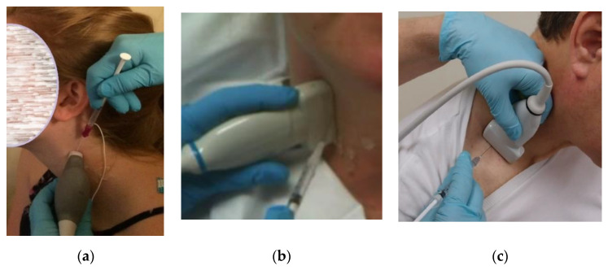

超声引导下痉挛性斜颈 A 型肉毒毒素注射标准方案
免责声明：本方案仅供经过肉毒毒素注射培训的专业医师学习与参考，不构成对任何具体患者的诊疗建议。剂量为文献与专家共识常用范围，实际用量须结合药品说明书、患者体型、病程、既往疗效与不良反应个体化确定。第 6 节真实超声图、MRI 与解剖图引自开放获取文献及公有领域图谱（出处与许可见各图下方），中文标注与轮廓勾画为本方案添加，为近似边界，使用前请由超声医师核对；示意图仅用于对照解剖关系。
适应证、禁忌证与术前评估
适应证
- 成人原发性（特发性）颈部肌张力障碍，头颈异常姿势或不自主运动影响生活、工作，或伴颈肩疼痛。
- 迟发性、继发性颈部肌张力障碍可个体化使用。
- 帕金森病、多系统萎缩等所致"颈前屈"疗效有限，需先明确病因。
禁忌证
- 注射部位感染；对本品成分过敏。
- 重症肌无力、Lambert-Eaton 综合征、运动神经元病等神经肌肉接头或运动神经元疾病。
- 妊娠期、哺乳期。
慎用
- 吞咽困难、误吸史，呼吸功能受损。
- 合用氨基糖苷类等影响神经肌肉传递的药物。
- 抗凝或抗血小板治疗（深部注射如颈长肌需评估出血风险）。
- 颈部手术或放疗史、颈部肌肉明显萎缩、体型消瘦。
术前评估清单
- 姿势分型：坐位、站立、行走及闭眼时观察，区分"头"（寰枕—寰枢关节）与"颈"（C2–C7）成分，按 Col-Cap 分型记录（见第 4 节）；记录感觉诡计、震颤、肩抬高。
- 量表：TWSTRS（严重程度、残疾、疼痛三个分量表）、Tsui 评分、疼痛 NRS/VAS。
- 触诊：比较双侧肌肉肥厚、张力和压痛。
- 超声双侧对比：同一体位、同一水平、探头不加压，测量候选肌厚度或横截面积；明显肥厚、主动收缩时增厚，支持该肌为责任肌。
- 肌电图（必要时）：深部肌或临床判断困难时，确认静息或姿势维持时的异常放电。
- 影像记录：拍摄正面、侧面、后面静态照片及 30 秒视频作为基线。
- 吞咽筛查：洼田饮水试验；已有吞咽障碍者谨慎选择颈前部肌肉。
- 知情同意：告知起效时间、维持时间、吞咽困难和颈部无力等风险。
药物与配制
| 产品 | 通用名 | 常用规格 | 与保妥适单位关系（经验值） |
|---|---|---|---|
| 保妥适（Botox） | onabotulinumtoxinA | 100 U | 本方案参照单位 |
| 衡力 | 注射用 A 型肉毒毒素（兰州） | 50 U / 100 U | 临床多按约 1 : 1 使用 |
| 吉适（Dysport） | abobotulinumtoxinA | 300 U / 500 U | 约 2.5–3 吉适单位 ≈ 1 保妥适单位 |
| 西马（Xeomin） | incobotulinumtoxinA | 50 U / 100 U | 约 1 : 1 |
各产品单位并非严格等效，换药时应按说明书重新确定剂量，并以国内批准适应证为准。
配制浓度（以 100 U/瓶计）
| 加 0.9% 氯化钠 | 浓度 | 每 0.1 mL 含 | 适用肌肉 |
|---|---|---|---|
| 1.0 mL | 100 U/mL | 10 U | 小而深、邻近重要结构的肌肉：头下斜肌、颈长肌、头长肌、斜角肌；吞咽风险高时的胸锁乳突肌 |
| 2.0 mL | 50 U/mL | 5 U | 标准浓度，适用于大多数颈部肌肉 |
| 4.0 mL | 25 U/mL | 2.5 U | 宽大扁平、需较大扩散范围的肌肉（可选）：斜方肌上部、头夹肌 |
配制要点
- 使用不含防腐剂的 0.9% 氯化钠，沿瓶壁缓慢注入，轻轻旋转溶解，不剧烈振荡。
- 配制后 2–8 °C 冷藏，按说明书时限内用完（保妥适为 24 小时内）。
- 用 1 mL 注射器（0.01 mL 刻度）抽取，注射器上标注浓度。
器械
- 注射针：25–27G，长 38–50 mm（深部肌）；30G 13 mm（浅表肌，可选）。
- 联合肌电引导时用涂层肌电注射针。
- 超声：线阵探头 5–15 MHz；颈后深层或肥胖者备凸阵 2–5 MHz。
- 无菌探头套、无菌耦合剂、急救药品（肾上腺素等）。
剂量原则
| 项目 | 推荐 | 说明 |
|---|---|---|
| 首次治疗总量 | 100–200 U | 初治患者一般不超过 200 U，先覆盖主要责任肌 |
| 维持治疗总量 | 150–300 U | 根据上次疗效与不良反应调整；保妥适关键试验平均约 236 U |
| 单次总量上限 | ≤ 300 U | 3 个月内各适应证累计一般不超过 400 U（保妥适说明书） |
| 单点剂量 | 5–25 U | 一般不超过 50 U/点；单点容量 ≤ 0.5 mL |
| 每块肌肉点数 | 1–4 点 | 按肌肉体积分配；大肌肉沿肌腹多点分散 |
| 胸锁乳突肌 | 双侧合计 ≤ 100 U | 降低吞咽困难风险；双侧同时注射时首次每侧 ≤ 25 U |
| 注射间隔 | ≥ 12 周 | 避免 4 周内"补打"，以减少中和抗体产生 |
| 剂量调整 | ± 20–30% | 每次只调整少数肌肉的剂量，便于判断效果 |
肌群选择：Col-Cap 分型
Col-Cap 概念把头颈运动分为两层："头"（caput）指头部在寰枕、寰枢关节上相对 C2 的运动，"颈"（collum）指 C2–C7 颈椎相对躯干的运动。两者的责任肌不同，例如同为"转头"，头旋转以对侧胸锁乳突肌和同侧头下斜肌为主，颈旋转以同侧肩胛提肌和颈夹肌为主。多数患者为几种类型的组合。
肌群选择助手
勾选患者的姿势成分。方向定义：旋转 = 下颌转向侧；侧倾 = 耳朵靠近的肩一侧；侧移 = 头移向侧；肩抬高 = 抬高侧。结果为候选肌与每侧剂量范围（保妥适 U），需结合触诊、超声和肌电确认。默认显示一个示例（向右头旋转）。
左侧
右侧
Col-Cap 分型与责任肌对照表
| 分型 | 英文 | 定义 | 同侧责任肌 | 对侧责任肌 | 双侧责任肌 |
|---|
单肌注射参数
剂量为每侧用量（保妥适/衡力 U）。深度为体型正常成人的大致范围，以实时超声为准。"切面"列对应第 6 节示意图编号。
| 肌肉 | 主要作用 | 相关分型 | 每侧剂量 U | 点数 | 单点 U | 注射位置 | 深度 cm | 切面 | 主要风险 |
|---|
颈部超声图解读
回声特征速查
| 结构 | 短轴（横断面）表现 | 长轴表现 | 鉴别 / 动态检查 |
|---|---|---|---|
| 骨骼肌 | 低回声背景内散在点状、短线状高回声（"星空"样） | 平行或羽状排列的高回声条纹 | 嘱患者做目标动作，肌肉增厚、纹理移动即为该肌 |
| 筋膜 / 肌外膜 | 包绕肌肉的线状高回声 | 连续高回声线 | 药液应在筋膜内扩散，越过筋膜则需调整针尖 |
| 骨皮质 | 强回声线，后方伴声影 | 同左 | 棘突、椎板、横突结节是定位标志，也是深部进针的"骨性屏障" |
| 动脉 | 圆形无回声，壁较厚，搏动 | 管状无回声 | 探头加压不能压闭；彩色多普勒见搏动性血流 |
| 静脉 | 椭圆形无回声，壁薄 | 管状无回声 | 轻压即闭合；Valsalva 动作时增粗 |
| 神经 | 神经根：圆形低回声；周围神经："蜂窝"样 | 束状、平行线样 | 不搏动、不可压闭；臂丛根在肌间沟内呈串珠状排列 |
| 甲状腺 | 均匀中等偏高回声（"磨玻璃"样） | 同左 | 位于气管两侧、颈总动脉内侧 |
| 气管 / 食管 | 气管：弧形强回声伴混响；食管：同心环"靶环"样 | — | 吞咽时食管蠕动、形态改变（左侧多见） |
| 胸膜 | 强回声线，下方 A 线（等距混响） | 同左 | 呼吸时可见"肺滑动"；出现此线即不可再向深部进针 |
| 受累肌（肌张力障碍） | 与对侧相比增厚、横截面积增大 | 纹理可增粗 | 反复注射后可见回声增高（纤维化、脂肪浸润），需相应调整剂量 |
学习方法：先看真实超声图上的彩色勾画线认识各结构的边界和相邻关系；拖动"轮廓线"滑杆可减淡或关闭勾画，对照原始灰阶图像体会回声特点；点图下方的结构名称（或图上的标签）可单独高亮该结构；再对照同一水平的 MRI、解剖图谱和尸体解剖照片，理解肌肉之间的层次与相邻关系；最后隐藏中文标注自测。每个切面的图片按"超声 → MRI → 解剖"顺序排列。勾画线为本方案根据原图描绘的近似边界。
每个切面先看真实超声图（图上为中文标注，可隐藏以查看原图并自测），再对照示意图理解解剖关系。真实图像来自不同设备和患者，深度、方位以图注为准。标注颜色：青色 = 常用靶肌，红色 = 危险结构，白色 = 其他肌肉，灰色 = 骨性标志，绿色 = 进针路径。
操作流程
- 核对与知情同意：核对患者、药品批号与有效期、注射计划（肌肉、侧别、剂量），签署知情同意书。
- 体位：颈前外侧肌（胸锁乳突肌、斜角肌、颈长肌）取仰卧位，头略转向对侧，肩下垫薄枕；颈后及颈后外侧肌取坐位低头前倾或俯卧位；头下斜肌取俯卧位或坐位低头。
- 超声设置：选择肌骨或小器官预设；深度覆盖到靶肌深面的骨面；聚焦置于靶肌水平；彩色多普勒速度标尺调低（约 10–20 cm/s）以显示小血管。
- 扫查与定位：先短轴识别结构，再转长轴确认肌纤维走向；双侧对比；嘱患者做目标动作确认靶肌；彩色多普勒标出进针路径上的血管；体表标记进针点和探头位置。
- 消毒：皮肤消毒，探头套无菌套，使用无菌耦合剂。
- 进针：深部或邻近血管神经的肌肉（颈长肌、头下斜肌、斜角肌、肩胛提肌、颈半棘肌）用平面内技术，全程显示针干与针尖；浅表大肌（胸锁乳突肌、斜方肌）可用平面外技术，通过"水定位"确认针尖。
- 推注：确认针尖位于肌腹中央，回抽无血后缓慢推注；实时观察药液在肌外膜内呈低回声扩散、肌肉轻度膨隆。若药液沿筋膜间隙流走或进入皮下，停止推注并调整针尖。
- 退针：每点推注后停留 5–10 秒再退针，减少药液沿针道外溢；按压 1–2 分钟。
- 记录：逐点记录肌肉、侧别、浓度、点数、单点剂量、深度和超声所见（见第 10 节记录表）。
- 观察与宣教：留观 15–30 分钟。告知当天勿按摩注射部位；3–7 天起效，2–6 周达峰；出现吞咽困难、呼吸困难、言语或视物异常立即就诊；颈前部注射后先进软食。

引自 Farrell M, et al. Toxins 2020;12(10):626, Fig. 3（CC BY 4.0）。
处方模板（示例）
以下为常见分型的首次治疗示例，配制浓度 5 U/0.1 mL，标注"浓配"者为 10 U/0.1 mL。实际处方须按评估结果调整。
A. 向右头旋转型（下颌转向右）
| 肌肉 | 侧 | 点数 | 剂量 U |
|---|---|---|---|
| 胸锁乳突肌 | 左 | 2 | 20 |
| 头夹肌 | 右 | 2 | 50 |
| 头下斜肌（浓配） | 右 | 1 | 15 |
| 头最长肌 | 右 | 1 | 20 |
B. 向左颈侧倾 + 左肩抬高
| 肌肉 | 侧 | 点数 | 剂量 U |
|---|---|---|---|
| 肩胛提肌 | 左 | 2 | 40 |
| 中、后斜角肌（浓配） | 左 | 2 | 20 |
| 颈夹肌 | 左 | 2 | 30 |
| 斜方肌上部 | 左 | 2 | 30 |
| 颈半棘肌 | 左 | 1 | 20 |
C. 头后仰型
| 肌肉 | 侧 | 点数 | 剂量 U |
|---|---|---|---|
| 头夹肌 | 双 | 2+2 | 40+40 |
| 头半棘肌 | 双 | 2+2 | 30+30 |
| 斜方肌上部 | 双 | 2+2 | 20+20 |
双侧后伸肌不同时取上限，以防抬头无力。
D. 颈前屈型
| 肌肉 | 侧 | 点数 | 剂量 U |
|---|---|---|---|
| 颈长肌（浓配，超声引导） | 双 | 1+1 | 15+15 |
| 胸锁乳突肌 | 双 | 2+2 | 20+20 |
| 前斜角肌（浓配） | 双 | 1+1 | 10+10 |
吞咽困难风险最高的组合。首次可先注射颈长肌，其余分次加入。
不良反应、疗效不佳与随访
| 不良反应 | 常见相关肌肉 / 原因 | 预防 | 处理 |
|---|---|---|---|
| 吞咽困难 | 胸锁乳突肌、颈长肌、舌骨上肌群，双侧颈前部注射 | 胸锁乳突肌双侧合计 ≤ 100 U；浓配小容量；颈前部肌分次注射 | 多在 1–2 周出现、持续 2–4 周；软食、少量多餐；呛咳明显或体重下降者评估误吸风险，必要时鼻饲 |
| 颈部无力、抬头困难 | 双侧头夹肌、头半棘肌大剂量 | 双侧后伸肌不同时取上限 | 颈托短期支持，一般数周内恢复；下次减量 |
| 局部疼痛、血肿 | 进针损伤 | 细针、彩色多普勒避开血管 | 按压、冷敷 |
| 口干、声音改变 | 药物向邻近结构扩散 | 控制容量与浓度 | 通常自行缓解 |
| 流感样症状、乏力 | 全身反应 | — | 对症处理 |
| 气胸 | 锁骨上区、斜方肌或斜角肌低位深进针 | 平面内显示针尖；见到胸膜线即不再深入 | 胸痛、气促立即胸片或超声排查 |
| 毒素远隔扩散 | 大剂量、个体易感 | 遵守总量上限 | 全身无力、复视、上睑下垂、构音或呼吸困难，立即急诊 |
原发无效（首次即无效）
- 重新做 Col-Cap 分型，确认是否把"头"和"颈"成分混淆。
- 检查是否遗漏深部责任肌：头下斜肌、颈长肌、颈半棘肌、斜角肌。
- 回顾超声记录，确认药液是否注入目标肌内。
- 剂量不足时，在主要责任肌上增加 20–30%。
继发无效（曾有效后失效）
- 考虑中和抗体，可做单侧额肌试验或趾短伸肌试验。
- 回顾是否有短间隔补打、单次大剂量。
- 姿势分型可能已改变，需重新评估。
随访时间点
- 2–4 周：疗效峰值与不良反应（TWSTRS、Tsui、疼痛评分）。
- 10–12 周：疗效维持时间、症状复发情况。
- 每次注射前：重新拍照、录像并分型，按上次反应调整方案。
注射记录表与参考文献
| 日期 | 分型 | 肌肉 | 侧别 | 浓度 U/0.1 mL | 点数 | 单点 U | 合计 U | 深度 cm | 引导方式 | 超声所见 | 不良反应 |
|---|---|---|---|---|---|---|---|---|---|---|---|
| 2026-10-28 | 头旋转（右） | 头下斜肌 | 右 | 10 | 1 | 15 | 15 | 3.1 | 超声平面内 | 较左侧增厚 | 无 |
首行为填写示例。
参考文献
- Reichel G, Stenner A, Jahn A. The phenomenology of cervical dystonia. Fortschr Neurol Psychiatr. 2009;77(5):272–277.
- Jost WH, Tatu L. Selection of muscles for botulinum toxin injections in cervical dystonia. Mov Disord Clin Pract. 2015;2(3):224–226.
- Tatu L, Jost WH. Anatomy and cervical dystonia: "Dysfunction follows form". J Neural Transm. 2017;124(2):237–243.
- Schramm A, Bäumer T, Fietzek U, et al. Relevance of sonography for botulinum toxin treatment of cervical dystonia: an expert statement. J Neural Transm. 2015;122(10):1457–1463.
- Farrell M, et al. Management of anterocapitis and anterocollis: a novel ultrasound guided approach combined with electromyography for botulinum toxin injection of longus colli and longus capitis. Toxins. 2020;12(10):626.
- Brumpt E, Aubry S, Vuillier F, Tatu L. Anatomo-sonographic identification of the longissimus capitis and splenius cervicis muscles: principles for possible application to ultrasound-guided botulinum toxin injections in cervical dystonia. Surg Radiol Anat. 2021;43(6):909–915.
- Walter U, Tsiberidou P, Kersten M, Storch A, Löhle M. Atrophy of the vagus nerve in Parkinson's disease revealed by high-resolution ultrasonography. Front Neurol. 2018;9:805.
- Gray H. Anatomy of the Human Body. 20th ed. Philadelphia: Lea & Febiger; 1918. Fig. 384, 385, 387, 389（公有领域，经 Wikimedia Commons）。
- Scali F. Suboccipital triangle dissection. Wikimedia Commons, CC BY-SA 3.0.
- Simpson DM, Hallett M, Ashman EJ, et al. Practice guideline update summary: Botulinum neurotoxin for the treatment of blepharospasm, cervical dystonia, adult spasticity, and headache. Neurology. 2016;86(19):1818–1826.
- 中华医学会神经病学分会帕金森病及运动障碍学组, 等. 中国肉毒毒素治疗应用专家共识. 中华神经科杂志, 2018, 51(10): 779–786.
- 保妥适（注射用 A 型肉毒毒素）、衡力（注射用 A 型肉毒毒素）药品说明书。
正式下发前请核对文献原文及最新版说明书。